Créer un Pool RaidZ1 avec ZFS : Guide Complet en 34 Étapes
Ce guide explique comment créer un Pool RaidZ1 avec 4 disques en ZFS. Chaque étape est accompagnée d'une image pour illustrer les actions à réaliser.
1. Commencer avec des disques vides
Accédez à Disques > ZFS > Pools > Gestion :
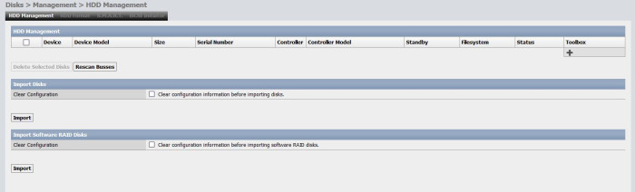
2. Importer les disques disponibles
Cliquez sur Importer les disques disponibles :
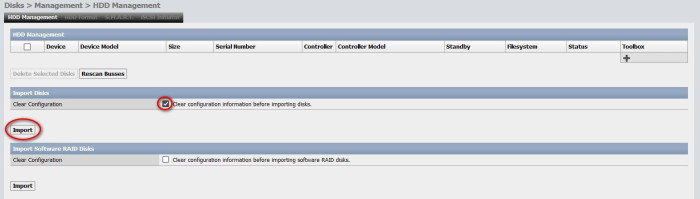
3. Appliquer les modifications pour importer
Cliquez sur Appliquer pour valider l'importation :
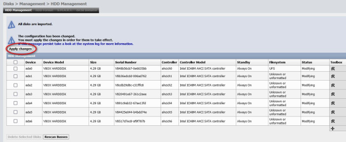
4. Disques importés
Les disques importés apparaissent dans la liste :
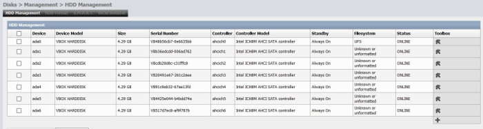
5. Système de fichiers "Inconnu"
Les disques affichent un système de fichiers "Inconnu" et ne peuvent pas être utilisés sans formatage :
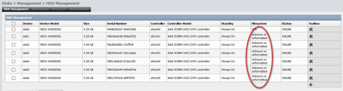
6. Vue d'ensemble des disques à formater
Accédez à Disques > Gestion pour voir les disques à formater pour ZFS :
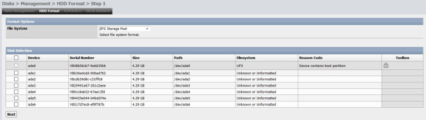
7. Sélectionner les disques à utiliser pour ZFS
Cochez les disques que vous souhaitez utiliser pour ZFS :
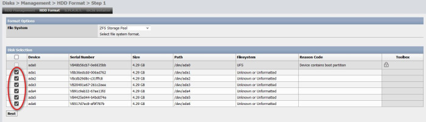
8. Vérifier les disques sélectionnés
Assurez-vous que les disques sont correctement sélectionnés. Ne modifiez pas les options de formatage :
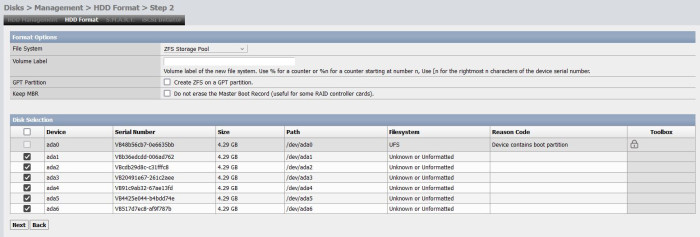
9. Formater les disques sélectionnés
Cliquez sur Formater pour formater les disques sélectionnés pour ZFS :
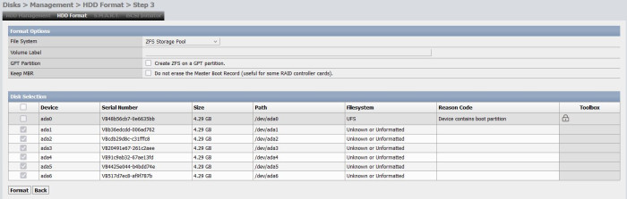
10. Disques formatés pour ZFS
Les disques sont maintenant formatés et prêts pour ZFS :
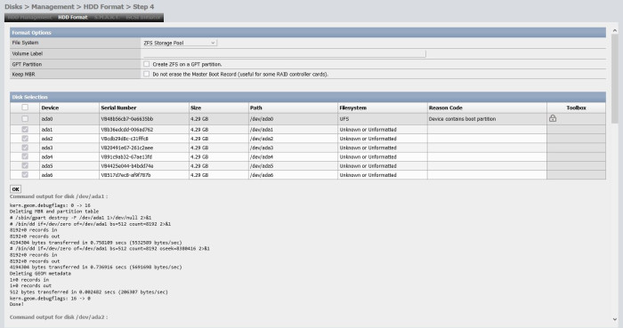
11. Disques prêts pour ZFS
Tous les disques sont maintenant prêts à être utilisés pour ZFS :
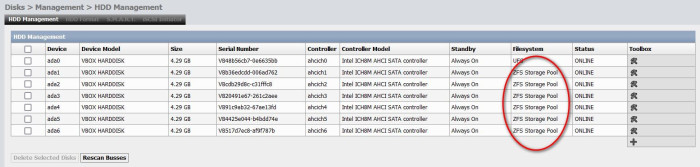
12. Accédez à la gestion des Pools
Allez dans Disques > ZFS > Pools > Gestion, la page sera vide pour l'instant :
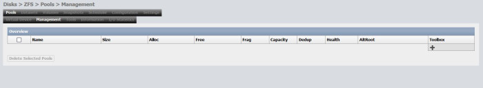
13. Aller dans la section Périphérique virtuel
Allez dans la section Périphérique virtuel :
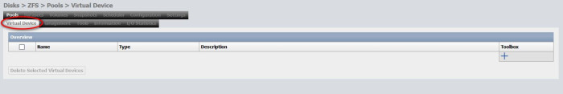
14. Créer un nouveau périphérique virtuel
Cliquez sur le bouton + pour commencer à créer un nouveau périphérique virtuel :
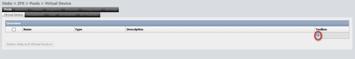
15. Liste des disques disponibles
Les disques formatés apparaissent dans la liste des disques disponibles :
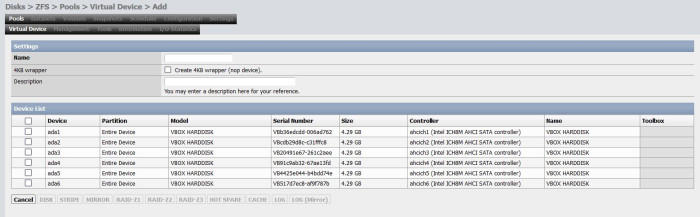
16. Sélectionner les disques et le niveau de RAID
Cochez les disques à utiliser, donnez un nom au périphérique virtuel et sélectionnez RaidZ1 :
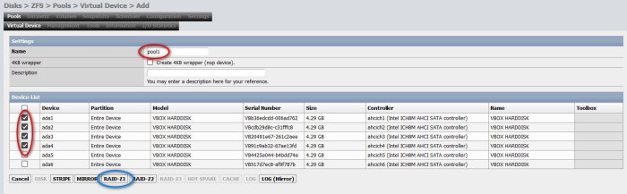
Attention : Ne cochez pas "Wrapper 4KB".
17. Créer le périphérique virtuel
Cliquez sur Créer, puis validez en cliquant sur OK :
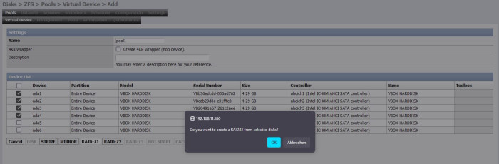
18. Appliquer les modifications
Cliquez sur Appliquer pour enregistrer le périphérique virtuel créé :
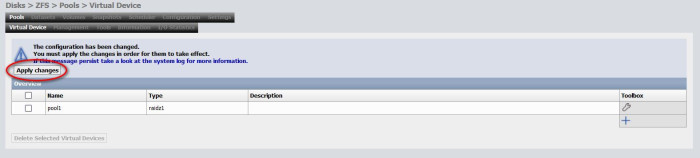
19. Vérifier le périphérique virtuel créé
Votre périphérique virtuel est maintenant visible dans la liste :
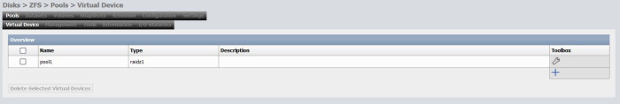
20. Retourner à la gestion des Pools
Retournez à Disques > ZFS > Pools > Gestion :
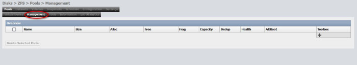
21. Ajouter un périphérique virtuel au Pool
Cliquez sur + pour ajouter un périphérique virtuel au Pool :
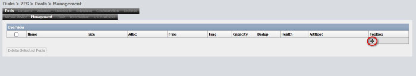
22. Sélectionner le périphérique virtuel
Cochez le périphérique virtuel créé et donnez un nom à votre Pool (ex : /mnt/testpool1) :
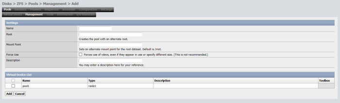
23. Ne touchez pas aux autres paramètres
Laissez les options par défaut, puis cliquez sur Appliquer :
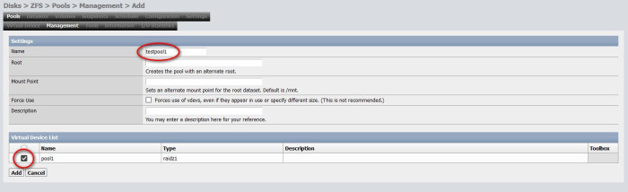
24. Pool RaidZ1 créé
Votre Pool RaidZ1 a été créé avec succès :
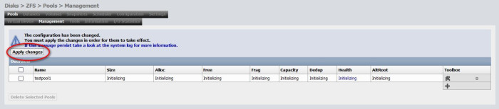
25. Pool monté et prêt à l'utilisation
Le Pool est maintenant monté et prêt à l'utilisation :
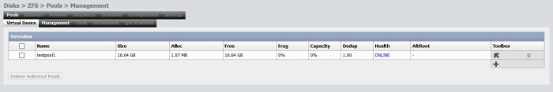
26. Détails du Pool
Consultez les informations détaillées sur votre Pool créé :
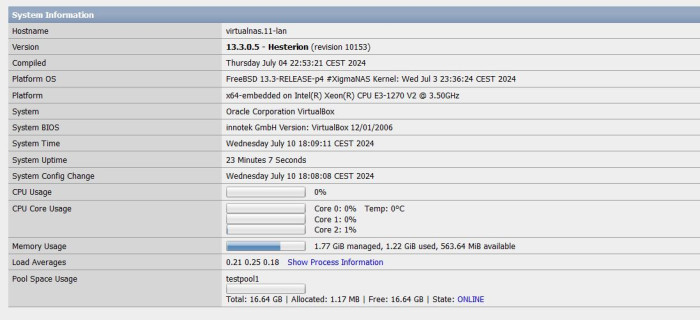
27. Mettre à jour les fonctionnalités ZFS
Cliquez sur Mettre à jour ZFS en bas de la page pour activer les fonctionnalités récentes de ZFS :
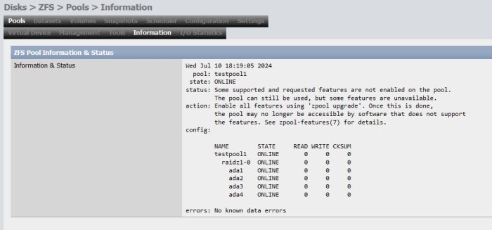
28. Sélectionner le Pool pour la mise à jour
Cochez le Pool créé et appliquez la mise à jour des fonctionnalités ZFS :
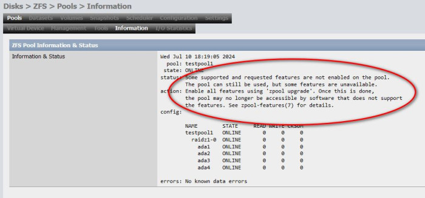
29. Mise à jour des fonctionnalités terminée
La mise à jour des fonctionnalités est terminée :
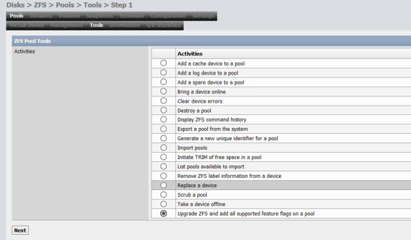
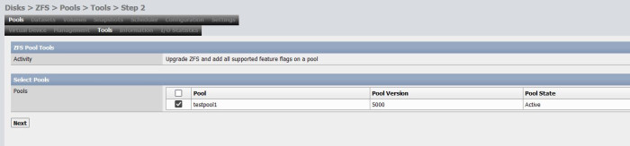
30. Vérification de l'état du Pool
Vérifiez que l'état du Pool est "clean" :
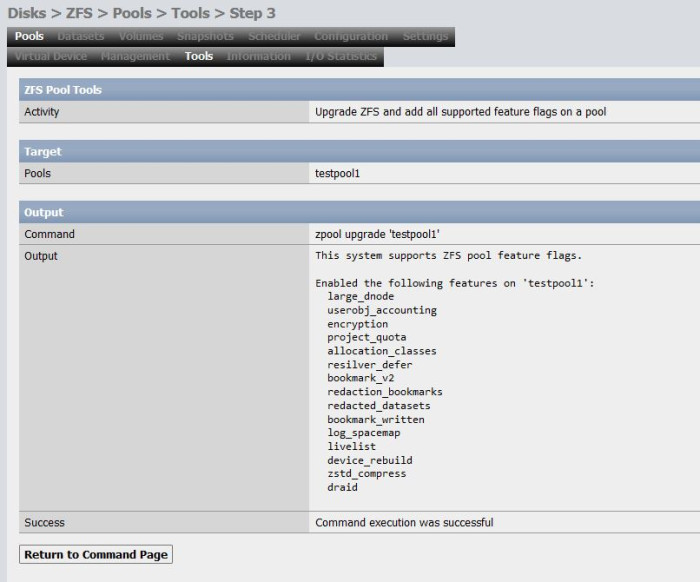
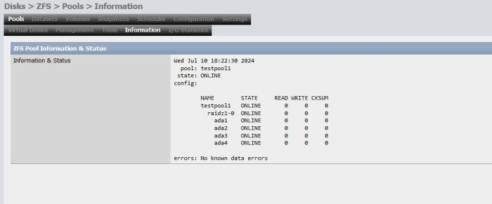
31. Synchronisation
Si vous avez créé le Pool en ligne de commande, synchronisez-le pour qu'il soit visible dans l'interface web :
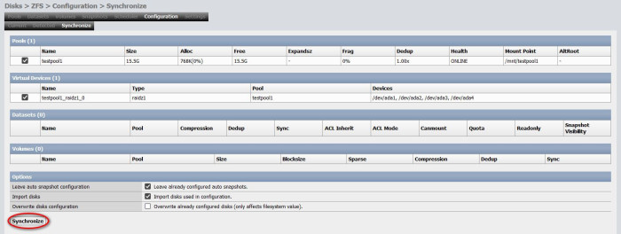
Commande unique pour créer un Pool RaidZ1
Vous pouvez créer le Pool en une seule commande via la ligne de commande :
zpool create testpool1 raidz1 /dev/disk1 /dev/disk2 /dev/disk3 /dev/disk4